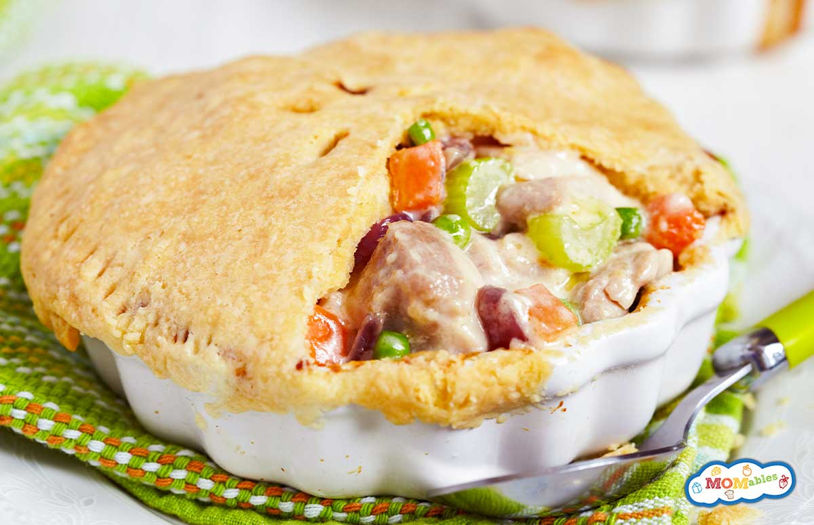

Chicken pot pie recipe

Ingredients
- 1 pound skinless, boneless chicken breast halves - cubed
- 1 cup sliced carrots
- 1 cup frozen green peas
- ½ cup sliced celery
- ⅓ cup butter
- ⅓ cup chopped onion
- ⅓ cup all-purpose flour
- ½ teaspoon salt
- ¼ teaspoon black pepper
- ¼ teaspoon celery seed
- 1 ¾ cups chicken broth
- ⅔ cup milk
- 2 (9 inch) unbaked pie crusts
Directions
Step 1 Gather all ingredients and preheat the oven to 425 degrees F (220 degrees C.)Step 2 Combine chicken, carrots, peas, and celery in a saucepan; add water to cover and bring to a boil. Boil for 15 minutes, then remove from the heat and drain.
Step 3 While the chicken is cooking, melt butter in another saucepan over medium heat. Add onion and cook until soft and translucent, 5 to 7 minutes. Stir in flour, salt, pepper, and celery seed
Step 4 Slowly stir in chicken broth and milk.
Step 5 Reduce heat to medium-low and simmer until thick, 5 to 10 minutes. Remove from heat and set aside.
Step 6 Place chicken and vegetables in the bottom pie crust. Pour hot liquid mixture over top.
Step 7 Cover with top crust, seal the edges, and cut away any excess dough. Make several small slits in the top crust to allow steam to escape.
Step 8 Bake in the preheated oven until pastry is golden brown and filling is bubbly, 30 to 35 minutes. Cool for 10 minutes before serving.
Step 9 Serve immediately and enjoy!